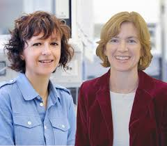

Jennifer Doudna and Emmanuelle Charpentier
Known as the first researchers to fully understand the CRISPR/Cas9 complex. The CRISPR/Cas9 complex is a naturally occurring enzyme in bacteria that is used as a defense mechanism to remove harmful viral DNA from the bacterial plasmid. They discovered that they could engineer this enzyme to target any sequence of DNA that they wanted. The engineered enzyme would contain a piece of sgRNA, which consisted of trRNA that was used to anchor the template strand inside of the enzyme and crRNA, which is used a comparator so that the enzyme can identify if the sequence of DNA that it is supposed to cut is the correct sequence. This is the most common method of genetic engineering done today due to the accuracy and adaptability of this enzyme.